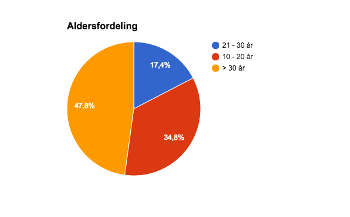
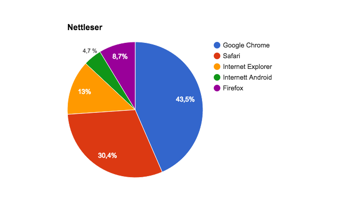
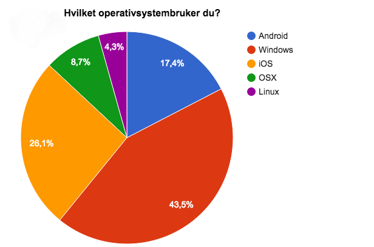
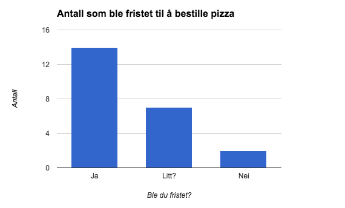
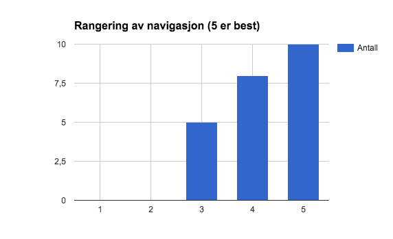
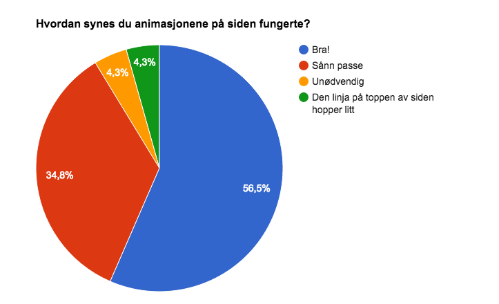
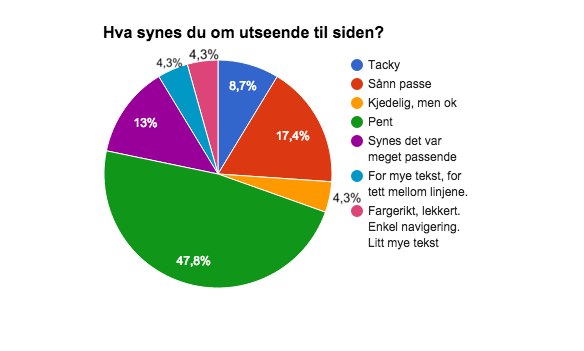

P4 Testing
Eirik Rismyhr, Andreas F. Eikeland, Håvard Hellem, Anders Larsen, Sivert N. Solum
Date: 15.11.15
Our client is the imaginary pizza maker "Pizzaperfeksjonisten". As such we do not have a specific contact person. Here is our website.
In the questionnaire we sent, our testers were asked for two kinds of information. First we asked about the testers, for example what platform the were on, their age and so on. In the next part of the questionnaire we asked about different aspects of our site like functionality, design and so on. The later part of the form also prompted the tester to tell us something they liked about our page and something they did not like. To view the full google form, click here.
Our main audience is other students like us, so to find our testers we simply sent the form around to our friends. We also wanted our site to be user friendly despite the audience, so we also sent it to some people above our primary age group. This worked pretty well and the result is a quite even distribution bewtween our target gruop and the rest, the age distribution is shown in the diagram below.
The most popular operating system was without a doubt Windows(43,5%). Next the second and third most popular was iOS(26,1%) and Android(17,4%). The full distribution of operating systems is shown below. We also asked our testers which browsers they were using. The three most popular here were, Chrome(43,5%), Safari(30,4%) and Internet Explorer(13%). We are currently not aware of any inconsistencies between browsers and operating systems.
 One of the main purposes of the site was to persuade the user to order a pizza. So we asked how many of our users were tempted to order a pizza after visiting our site. The results were very good, and most of the people who used the site wanted pizza afterwards. Almost all of those who were not tempted said it was because of the clunky ordering, and that is something we will look into. The complete stats of who wanted pizza or not is shown in the graph below.
Another question we asked our testers was to rate the navigation of the site. On this point we also recieved some very good feedback, there were no direct complaints about the functionality of the navigation bar. Also the people who was most unsatisfied with the navigation was outside our target group. The stats about how people rated our page navigation is shown in the graph below.
We then asked our testers what they thought about the general page design and how the various animations and drop-down menus worked. Also here we recieved a lot of positive feedback, it seemed like most of our testers liked our design and the functionality of our animations and so on. Some also specified in the optional field that they especially liked our design. The complete statistics for what people thought about design and animations is shown in the two graphs below.
 We are very grateful for all the constructive feedback we got and will try to tackle the problems encountered head on. One of the first and maybe most often mentioned problems may be the ordering issue. Quite a few people said that they did not want to order a pizza because the ordering seemed difficult. This problem is a bit difficult to handle as the roadmap specified that the approach of emailing the client was recommended. As one of our testers said, one way we could improve this would be to include some js which would have made it possible to order a pizza directly from the menu. The ordering page also needs to be changed, for example in a way that you can choose which pizza you want from a menu or some sort of list. It would also be optimal to have the ordering information actually go somewhere, but this requires server side scripting or other resources outside this project.
We also got some feedback regarding the stuttering of the persistent navbar. This is a matter of improving the alredy exsisting js. This is a task that would be possible and not too difficult to implement. After we received feedback regarding the jumpy navigation bar, we rewrote fixedNavbar.js, and integrated it into template.js. Now it works perfectly!
Quite a few of the testers approved of our design and thought it to be very fitting. Some improvements here would be to simply make it a bit more fluent and maybe look over our placement of text and pictures as some testers mentioned that there was too much text. It was also pointed out to us during testing that the site contained some spelling errors, this must of course be fixed. We went through the CSS and made sure everything worked as intended. Some tables that were supposed to be centered on the page were slightly off, so we fixed it.
This task, while it seemed daunting at first, was a great challenge and all of us were able to learn a lot, Of course we all learned more about CSS, HTML, js and even jquery. This assignment has given us a lot more than that. While designing an entire webpage seems like a huge task together with the assignment and some teamwork we managed to break it down into doable parts. As we continued to work on our page it was satisfying to see the hours of work we put into it amount to something. While not everything always went as planned at first, we managed to have frequent meetings where we discussed problems, solutions and things that had to be done. We encountered few or no problems regarding the teamwork since everyone performed their tasks and asked if there was something they did not understand, all in all this has been a fantastic learning experience.